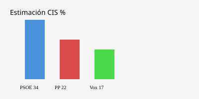

España · Encuestas · 14 de octubre de 2026
El CIS de octubre sitúa al PSOE en el 34 % y al PP en el 22,2 %
_02.JPG)
Lo que está acordado entre redacciones
El Centro de Investigaciones Sociológicas publicó el 14 de octubre de 2026 su barómetro de octubre. La estimación de voto sitúa al PSOE en el 34 %, tres puntos por encima del barómetro de septiembre, y al PP en el 22,2 %, 3,3 puntos por debajo. Vox aparece en el 17,1 %. Sumar/Frente Amplio en el 6,1 % y Podemos en el 3,1 %. La ventaja del PSOE sobre el PP es de 11,8 puntos. El estudio se basa en 5.025 entrevistas realizadas entre el 1 y el 6 de octubre, con un margen de error de ±1,4 %. Euronews, Heraldo, ORM y otros medios coinciden en estos porcentajes y en las fechas del trabajo de campo.
El barómetro es el primero publicado después del anuncio del adelanto electoral al 29 de noviembre, aunque el trabajo de campo terminó antes de que ese anuncio se completara en todos sus detalles. Es también el primero tras el desahucio de Maricarmen Abascal y la derogación de los decretos de vivienda.
Lo que es solo una cita o interpretación
Las declaraciones de dirigentes del PSOE, del PP o de Vox sobre si el sondeo es fiable, sobre la “inflación” de un partido o sobre las posibilidades de remontada son opiniones de los partidos. La comparación con la media de encuestas privadas, que algunas redacciones sitúan con el PP por delante, es un análisis de periodistas o de agregadores; no es un dato del CIS. El CIS es un organismo público cuyo presidente es nombrado por el gobierno. Esa relación institucional es un hecho; la afirmación de que ello sesga sistemáticamente los resultados es una hipótesis que cada lector puede evaluar con los datos históricos de desviación.
Mecanismo e historia
El CIS realiza barómetros mensuales de opinión política. La estimación de voto es una proyección a partir de las respuestas de intención de voto, recuerdo de voto y otras variables, aplicando un modelo propio. No es un recuento de papeletas. El margen de error del ±1,4 % se refiere a la muestra; la incertidumbre del modelo de estimación es adicional. Las entrevistas telefónicas del 1 al 6 de octubre coincidieron con la crisis de vivienda y con los días en que el presidente valoraba la continuidad de la legislatura. Cualquier efecto de esos eventos sobre las respuestas queda dentro del periodo de campo; el sondeo no aísla una causa única.
Las elecciones generales están convocadas para el 29 de noviembre de 2026. Entre la publicación del barómetro y la jornada electoral median aproximadamente seis semanas de precampaña y campaña. Los sondeos pueden moverse; la historia de desviaciones entre el CIS y el resultado final es conocida y varía de convocatoria a convocatoria. Un barómetro de octubre no predice el resultado de noviembre con precisión de punto.
Lo que la historia no es
El 34 % no es un escaño ni un resultado electoral. No es una predicción oficial del Gobierno. No demuestra que un partido “gane” o “pierda” las elecciones; las elecciones se deciden el día de la votación. Tampoco es un veredicto sobre la gestión de la vivienda o sobre ningún caso judicial concreto; esos temas pueden haber influido en las respuestas, pero el barómetro no mide causalidad.

Artículos de fuente y puntuaciones
Crédito de imagen: Wikimedia Commons File:Madrid_-_Instituto_Nacional_de_Estadística_(INE)_02.JPG (licencia en la página del archivo). Fallback SVG local en images/.